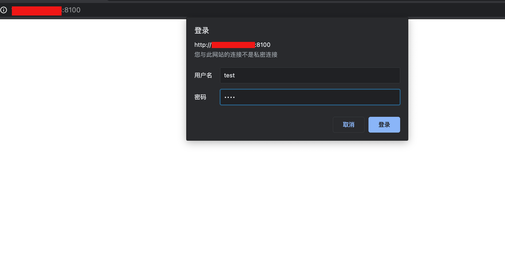

Serving "." on all network interfaces (0.0.0.0) on HTTP port: 8100
Local network interfaces and their IP addresses so you can pass one to your colleagues: Interface | IPv4 Address | IPv6 Address ---------------------|-----------------|---------------------------------------- lo | 127.0.0.1 | ::1 eth0 | xxx.xxx.xx.xxx | fe80::a8aa:ff:fe11:fb4b docker0 | 172.17.0.1 | fe80::42:1dff:fe8b:c5fe br-556c0122836a | 172.24.0.1 | fe80::42:92ff:fe47:2965 vethf6d94b9 | | fe80::dcdf:59ff:fe90:c6e3 vethf64d185 | | fe80::286e:3eff:fe12:eaf9 veth7259f52 | | fe80::34d3:83ff:fe97:612c veth0e57d69 | | fe80::c007:bff:fe1b:2b7b
You probably want to share: http://xxx.xxx.xx.xxx:8100
-d 指定文件根目录
1
$ serve -p 8100 -d "/opt"
-a 启用 Basic 认证
1
$ serve -p 8100 -d "/opt" -a "test:test"

-s 生成一个自签名证书（7天有效期），开启 https 协议
1
$ serve -p 8100 -d "/opt" -a "test:test" -s
-b 指定监听的网络接口，默认为 0.0.0.0
1
$ serve -p 8100 -d "/opt" -a "test:test" -b "0.0.0.0"
-h 查看帮助文档
1 2 3 4 5 6 7 8 9 10 11 12 13 14
$ serve -h Usage of serve: -a string Require basic authentication with the given credentials (e.g. -a "alice:secret") -b string Bind to (listen on) a specific interface. "0.0.0.0" is for ALL interfaces. "localhost" disables access from other devices. (default "0.0.0.0") -d string The directory of static files to host (default ".") -h Print the usage -p string Port to serve on. 8080 by default for HTTP, 8443 for HTTPS (when using the -s flag) (default "8080") -s Serve via HTTPS instead of HTTP. Creates a temporary self-signed certificate for localhost, 127.0.0.1, <hostname>.local, <hostname>.lan, <hostname>.home and the determined LAN IP address -t Test / dry run (just prints the interface table) -v Print the version